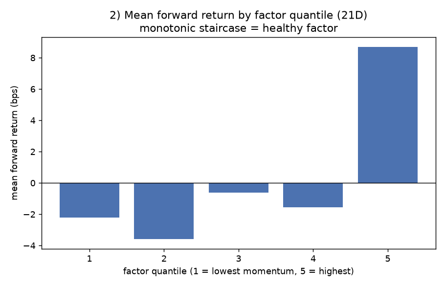

Quant Research · Project Report
从零构建的事件驱动美股回测 / 纸面交易系统,以及"在可信条件下,这个策略并不成立"的诚实结论。
我从零构建了一套事件驱动回测系统,忠实实现并严格评估了一个横截面动量策略。 在可信的回测下(QuantConnect,2008–2026,无幸存者偏差),它对 SPY 没有可靠超额 (信息比率 IR ≈ 0)。我据此停用了它,并把根因定位到:波动率目标叠加绝对动量过滤, 使组合 Beta 仅 0.55、约一半资金长期趴在现金 —— 压低了收益却没换来更高夏普。
行情以事件流驱动,单向流经四个组件;同一套策略代码贯穿回测与 Alpaca 纸面交易(paper trading,无真实资金),只替换数据源与执行层。
三条工程底线,均由自动化测试守卫:
12-1 风险调整动量 = 过去 12 个月(跳过最近 1 个月)收益 ÷ 年化波动;绝对动量过滤在全负时清仓持现金,熊市自动降险。
仓库内的回测引擎默认使用固定 30 只 universe,带幸存者偏差,仅用于引擎打通与对账,不足以评估策略好坏。 真正用于下判断的数字,来自把同一策略跑在 QuantConnect 上(2008–2026、动态 universe、无幸存者偏差)。诚实地区分 "引擎跑得对"与"策略值不值",是本项目刻意保留的底线。
| 指标 | 值 | 解读 |
|---|---|---|
| 累计收益 | ~+591% | 略高于 SPY ~+500% |
| 年化收益 CAGR | 11.33% | |
| 夏普 Sharpe | 0.50 | ≈ 大盘水平 |
| 最大回撤 | 29.6% | 含 2008;策略无回撤上限 |
| 年化波动 | 13.5% | |
| Beta | 0.55 | 病根:约半仓常年现金 |
| Alpha | 2.9% | |
| 信息比率 IR | −0.017 | 对 SPY 无可靠超额 |
| PSR | 2.6% | 夏普显著性极低 |
收益略高,但 Beta 仅 0.55、夏普 ≈ 大盘、IR ≈ 0 —— 本质是"≈ 大盘收益、约一半风险",而非"跑赢大盘"。
target_vol 是波动目标,不是回撤上限。组合层面说"现金拖累",只是一种解释。为了不让结论悬在单一回测上,我又从因子层面
独立查了一次:把纸面交易与回测共用的那个大脑(momentum_scores = 12-1 动量 ÷ 波动)拿出来,
不建策略、不交易,只问 —— 按这个因子排序,到底能不能把未来的赢家和输家分开?
管线:Tiingo 日线 → 每月末算因子 → Alphalens 计算 Rank IC 与分位收益。
| 预测周期 | 平均 IC | ICIR | t 值 | 胜率 |
|---|---|---|---|---|
| 1 天 | 0.0204 | 0.07 | 4.46 | 53.6% |
| 5 天 | 0.0230 | 0.08 | 5.05 | 54.8% |
| 21 天 | 0.0168 | 0.06 | 3.90 | 53.2% |

这张图说明了一件更具体的事:因子的预测力只存在于最顶部那一档。 它能挑出前 20% 的赢家,但对其余股票几乎没有排序能力 —— 那部分是噪声。策略只买 top-10(约前 10%), 所以它确实用在了唯一有效的那一段上;问题是这一段本身就很薄(+8.7 bps / 21 天)。
每个决策先开会逐点讨论、记录,再统一实现(不边做边改),完整留痕见仓库 docs/REQUIREMENTS.md。
| # | 议题 | 决定 |
|---|---|---|
| D1 | 集中度 / 波动率目标 | 接受不改 · 先观察 |
| D2 | 绝对动量过滤(方向性防御) | 加入 |
| D3 | 择时过滤(SPY < 200 日线) | 暂不加 |
| D4 | universe 参数(top-100 / top-10) | 保留 |
| D5 | 回测费用模型 | 不改 |
| D6 | 回测无幸存者偏差池 | 推迟 phase 1.5 |
它不声称是一个盈利策略,也不证明我能找到 alpha —— 这两点对一个学习项目都不现实。它证明的是: 我能正确地搭建一套防前视、可对账的回测系统,能用可信的方式评估策略,并且在证据指向 "不成立"时诚实地承认并停手。对量化岗位而言,这套研究纪律远比一条漂亮但可疑的曲线更有说服力。